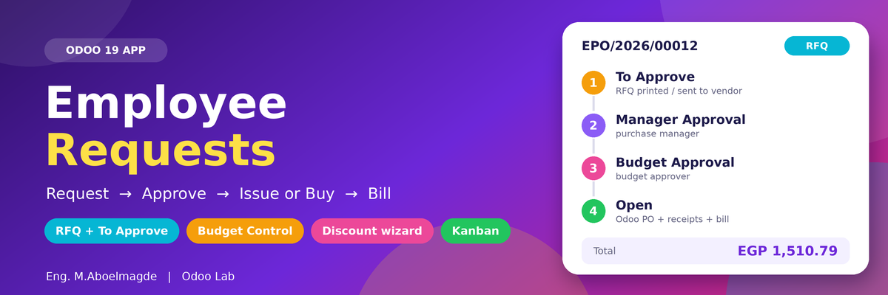
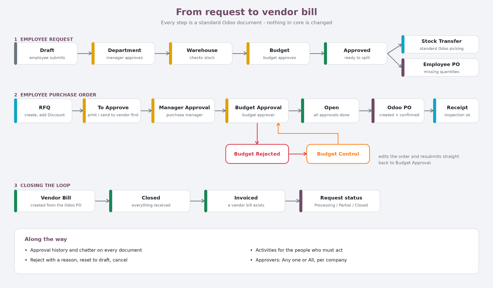
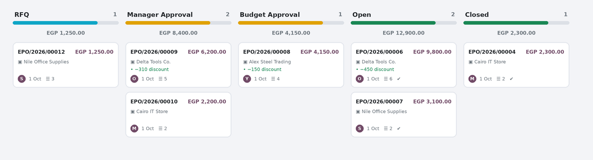
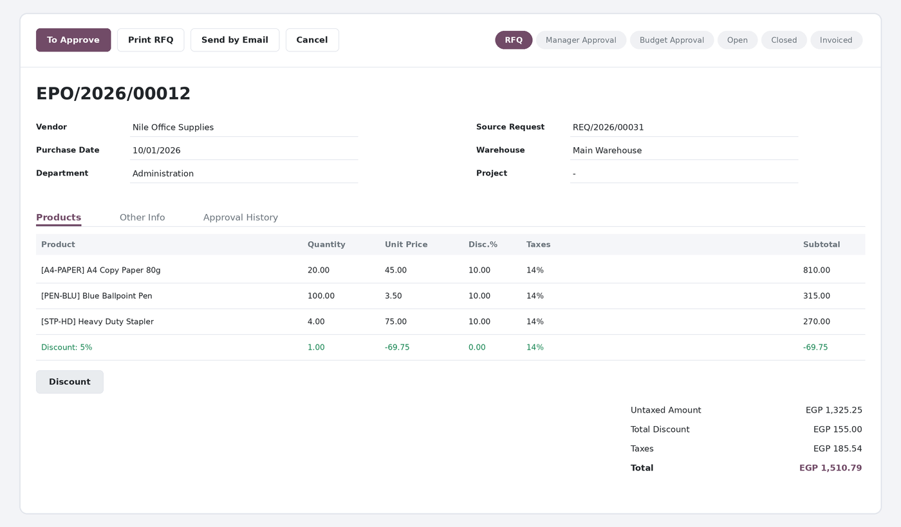
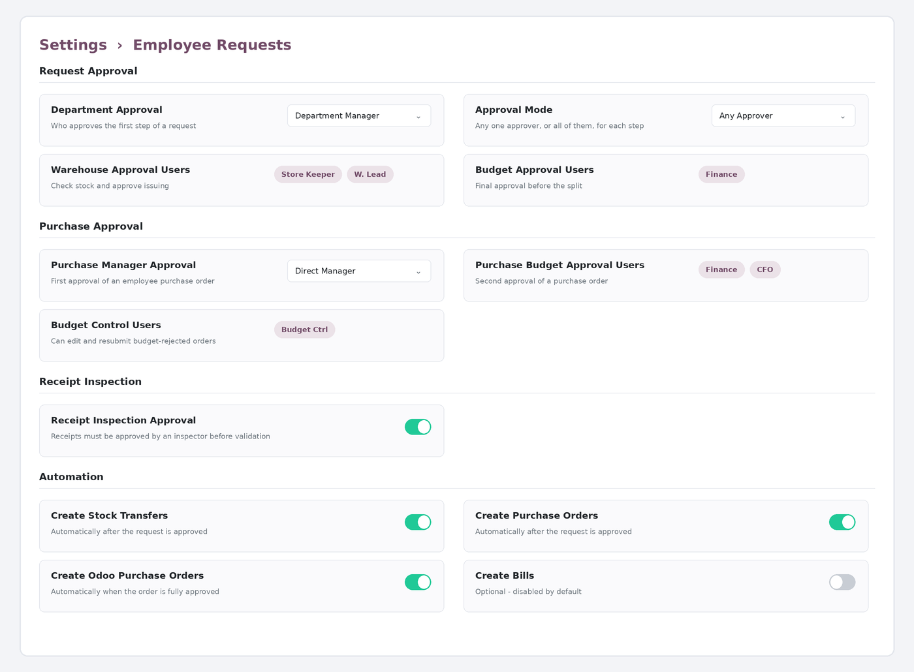

Employee Purchase & Material RequestRequest → approve → issue from stock or buy → receive → bill. One flow, standard Odoo documents. |
PRICE
149 USD
one-time · Odoo 19
|
Odoo 19 · LGPL-3 · Author: Eng. M.Aboelmagde · Odoo Lab (@odoolab)
Employees ask for materials. The system checks every warehouse, issues what is in stock through standard Odoo transfers and sends the missing quantities to purchasing, where they become Employee Purchase Orders with their own approvals. Approved orders create a real Odoo purchase order, receipts and vendor bills. Nothing in Odoo core is modified.

Purchase orders can be switched to a kanban board grouped by stage, with the total amount of each column, the vendor, amount, discount, employee, source request, number of lines, activities, and a tick once the Odoo purchase order exists. List and form views are one click away.


Everything is set in Settings → Employee Requests (administrators only). Users picked in the settings automatically receive the matching access group, so nobody has to tick groups on the user form.

| Setting | What it does |
|---|---|
| Department Approval | First step of a request: the employee's department manager, or specific users. |
| Approval Mode | Any one approver is enough, or all of them must approve each step. |
| Warehouse / Budget Approval Users | Who checks stock and who gives the budget approval of a request. |
| Purchase Manager Approval | First approval of a purchase order: the requester's direct manager, or specific users. |
| Purchase Budget Approval Users | Second approval of a purchase order. |
| Budget Control Users | Can edit and resubmit budget-rejected orders. |
| Receipt Inspection Approval | Receipts must be approved by an inspector (the requester, or specific users) before they can be validated. |
| Automation | Automatically create stock transfers, purchase orders and Odoo purchase orders; automatic bills are optional and off by default. |
| Group | Can |
|---|---|
| Employee Request User | Create, read and edit own requests; sees the app. |
| Create for Employees | Create requests on behalf of other employees. |
| All Documents | Read all requests, stock transfers and purchase orders. |
| Dashboard | Open the dashboard. |
| Warehouse Approver / Budget Approver | Approve their step of a request. |
| Employee Purchase User / Manager | Create and edit employee purchase orders. |
| Budget Control User | Edit and resubmit budget-rejected purchase orders. |
| Employee Request Manager | Read everything, reset and cancel requests. |
Technical name: mo_employee_request · Odoo 19 · depends on Contacts/HR, Project, Inventory (stock, stock_account), Purchase (purchase, purchase_stock, purchase_requisition), Accounting and Analytic · no core files edited · demo data included · LGPL-3.
Author: Eng. M.Aboelmagde · Odoo Lab (@odoolab)